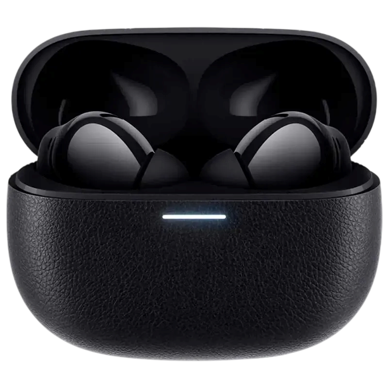
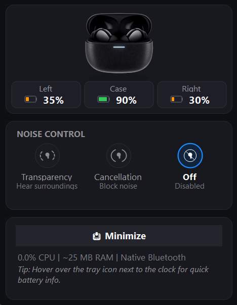
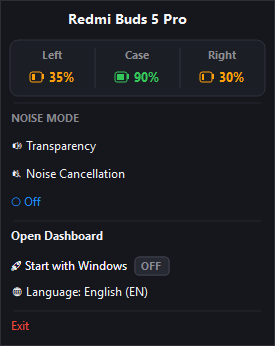

Your earbuds. Your control.
A lightweight Windows companion that brings intelligent control, real-time battery monitoring and seamless earbud management to your desktop.
Engineered for Windows.
Designed with HyperOS Precision.
MiEarbuddy bridges the gap between Xiaomi's refined mobile design and native Windows desktop architecture.

Responsive Adaptive Header
Fluid title bar controls, instant language toggle (EN/PT), and clean custom caption buttons (↺ Reset, ─ Minimize, ✕ Hide to Tray).
GDI+ Real-Time Battery Capsules
Triple-cell FastPair monitoring rendered natively with dynamic color transitions and charging lightning indicators.
Direct Noise Control Architecture
One-click switching between Active Noise Cancellation, Transparency Mode, and Off Mode via RFCOMM sockets.
Smart System Tray Minimization
Minimizes instantly next to your Windows clock. Zero CPU overhead during background standby.
Pure acoustic silence.
At your fingertips.
Command earbud DSP hardware directly over Winsock RFCOMM sockets with zero audio stutter.
Noise Cancellation
Deep active noise suppression. Eliminates low-frequency engine, fan, and commute hum for pure acoustic focus.
Transparency Mode
Natural ambient awareness. Blends surrounding voices and environment seamlessly without removing your earbuds.
Off Mode
Standard passive acoustic seal. Conserves earbud battery while maintaining natural physical isolation.
Every bud. The case.
Always in sight.
Never get surprised by an empty earbud. Live battery telemetry decoded instantly in real time.
Decodes Google FastPair telemetry beacons in real time. Dynamic color thresholds warn you when an earbud reaches 20%, and lightning indicators verify charging status instantly.
Always ready.
Never in your way.
MiEarbuddy resides quietly in your Windows Notification Area, giving you instant access without cluttering your taskbar.

Dedicated Windows System Tray Context MenuReal-Time Hover Tooltip
Hovering over the tray icon next to your Windows clock instantly reveals current earbud model, individual battery percentages, and active noise mode.
One-Click Noise Mode Switching
Toggle Noise Cancellation, Transparency Mode, or Off directly from the notification area without opening the main window.
Start with Windows
Integrated with Windows Registry (Run key) and -tray launch argument for completely silent, unobtrusive background startup.
0.0% CPU.
~25 MB RAM.
Zero Electron.
Built with pure C# and Windows GDI+. No web runtimes, no Node.js, no WebView2, and no Python.
Winsock RFCOMM (ws2_32.dll)
Direct low-level communication with Windows Bluetooth sockets, eliminating high-latency driver wrappers.
E21 Cryptographic Handshake
Reverse-engineered mutual challenge authentication protocol ensuring secure pairing with Xiaomi hardware.
FastPair Telemetry Decoder
Extracts individual Left, Right, and Case battery percentages from Google FastPair beacons in real time.
Single-Instance Mutex Guard
Prevents duplicate background processes, automatically bringing the active instance to the foreground.
Simple Setup.
Seamless Operation.
Four simple steps to bring your Xiaomi and Redmi earbuds to your Windows desktop.
Download MiEarbuddy
Download the standalone single executable (~680 KB). No installer, wizard, or admin permissions required.
Connect via Windows
Pair your Xiaomi or Redmi earbuds to your PC using the standard Windows Bluetooth settings menu.
Launch & Authenticate
Run MiEarbuddy. It automatically discovers paired earbuds and performs the secure E21 cryptographic handshake.
Enjoy Full Control
Monitor triple-cell battery levels and toggle Active Noise Cancellation directly from your desktop or system tray.
Compatibility & Requirements
Engineered specifically for Xiaomi and Redmi audio hardware on modern Windows operating systems.
Verified Hardware: Redmi Buds 5 Pro
Specifically developed and verified on Redmi Buds 5 Pro. Compatible with Xiaomi and Redmi earbuds supporting Xiaomi MMA and FastPair RFCOMM protocol.
- Active Noise Cancellation (ANC), Transparency, and Off modes
- Individual Left Bud, Right Bud, and Charging Case battery monitoring
- Smart Anti-Bounce filter for smooth acoustic transitions
- Start with Windows background auto-startup
System Requirements
Operating System: Windows 11 (all editions) or Windows 10 (version 1809+).
.NET Framework: .NET Framework 4.0 or newer (built into Windows by default).
Bluetooth Hardware: Bluetooth 4.0+ adapter supporting RFCOMM serial connection.
User Permissions: Standard user account (no Administrator elevation required).
Take control of your
listening experience.
Get MiEarbuddy and bring your earbuds closer to your Windows desktop.
Frequently Asked Questions
Everything you need to know about MiEarbuddy, its architecture, and compatibility.